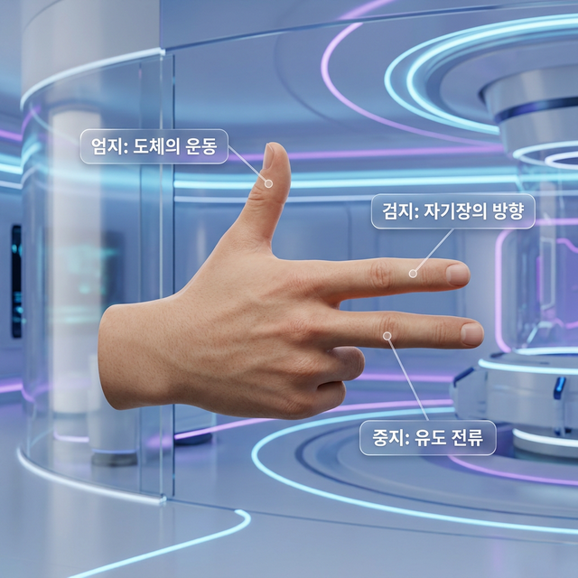
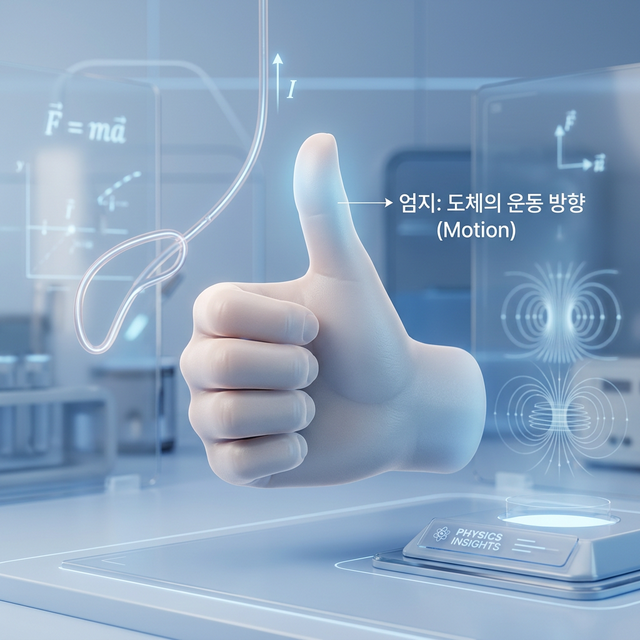
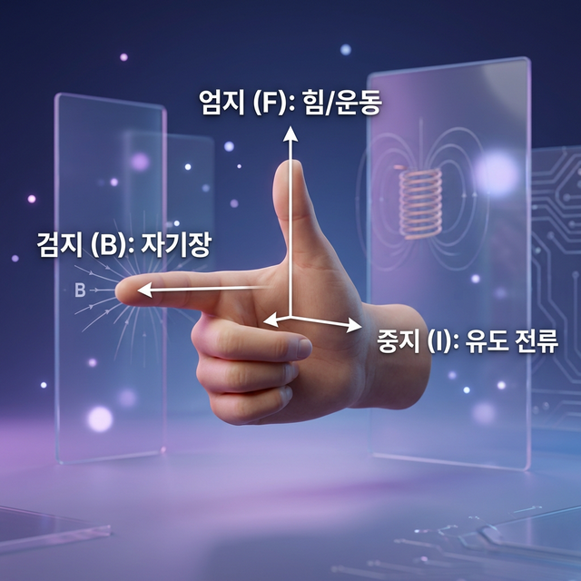

역할: 외부에서 가해진 힘 또는 도체의 물리적 이동 방향
가장 강력한 손가락인 엄지는 우리가 투입하는 '에너지의 원천'을 의미합니다. 수력 발전소에서 떨어지는 물이 터빈을 돌리는 힘, 바람이 풍차를 돌리는 힘, 또는 손으로 도선을 직접 끌어당기는 힘의 방향입니다. 물리학적으로는 '속도 벡터(v)'를 상징하며, 모든 에너지 전환의 시작점입니다.
- 직관적 이해: "내가 이 방향으로 힘을 주어 움직인다!"
- 매칭 포인트: 발전기 터빈의 회전 접선 방향
전자기 유도의 원리를 한눈에 이해하는 직관적인 가이드. 보이지 않는 자기장과 전류의 상호작용을 우아한 디자인으로 만나보세요.

플레밍의 오른손 법칙(Fleming's Right-Hand Rule)은 단순히 손가락의 방향을 맞추는 놀이가 아닙니다. 이는 현대 문명의 근간인 '발전기(Generator)'의 가장 기초적인 물리적 설계도입니다. 자기장이라는 보이지 않는 에너지가 흐르는 공간에서, 인간이 기계적 힘을 가해 도체를 움직였을 때, 그 결과물로 '전기(Electric Current)'가 어떻게 발생하는지를 정의하는 법칙입니다.
19세기 말, 존 앰브로즈 플레밍은 전자기학의 복잡한 수식들(맥스웰 방정식, 로런츠 힘의 벡터 외적 등)이 공학 현장에서 직관적으로 사용되기 어렵다는 점을 간파했습니다. 그는 문과생부터 전문 엔지니어까지 누구나 자신의 손만을 사용하여 전기 발생의 방향을 즉각적으로 예측할 수 있는 이 'Mnemonic(기억 술사)' 규칙을 체계화했습니다. 이는 인류가 자연의 에너지를 통제 가능한 형태로 전환하는 과정에서 거둔 위대한 직관의 승리입니다.
도체 내부에는 수많은 자유 전자가 존재합니다. 도체가 자기장을 가로질러 움직이면, 내부의 전자들은 자기장에 의한 물리적 힘인 '로런츠 힘'을 받게 됩니다. 이 힘에 의해 전자가 한쪽 방향으로 강제 이동하게 되는데, 이것이 우리가 회로에서 확인하는 '전류'의 정체입니다. 플레밍의 법칙은 이 로런츠 힘의 작용 방향을 세 손가락의 기하학적 구조로 완벽하게 치환해 보여줍니다.

그림 1: 운동의 방향을 상징하는 엄지의 직관적인 포즈
오른손의 세 손가락을 각각 90도 각도로 완벽하게 정렬하십시오. 이 3차원 축은 물리학에서 말하는 직교 좌표계(Cartesian Coordinate System)를 형성하며, 전자기장의 상호작용을 수학적으로 완벽하게 모사합니다.

그림 2: 힘(F), 자기장(B), 전류(I)의 90도 수직 관계 (FBI 모델)
역할: 외부에서 가해진 힘 또는 도체의 물리적 이동 방향
가장 강력한 손가락인 엄지는 우리가 투입하는 '에너지의 원천'을 의미합니다. 수력 발전소에서 떨어지는 물이 터빈을 돌리는 힘, 바람이 풍차를 돌리는 힘, 또는 손으로 도선을 직접 끌어당기는 힘의 방향입니다. 물리학적으로는 '속도 벡터(v)'를 상징하며, 모든 에너지 전환의 시작점입니다.
역할: 자석이 만드는 자기장의 방향 (N → S)
검지는 무언가를 가리키는 손가락입니다. 여기서는 보이지 않는 자기장의 길을 가리킵니다. 영구 자석의 북극(N)에서 남극(S)으로 흐르는 가상의 선들을 상상해 보십시오. 이 방향이 고정되어 있을 때, 도체의 움직임이 어떤 결과를 낳을지 결정하는 주된 배경(Field)이 됩니다.
역할: 최종적으로 발생하는 유도 전류의 방향
중지는 앞의 두 조건(운동과 자기장)에 의해 탄생하는 '결과물'을 상징합니다. 엄지와 검지가 결정되면, 물리학의 우주적 법칙에 의해 중지의 방향으로 전기가 흐를 수밖에 없습니다. 이것이 우리가 스마트폰을 충전하고 전등을 밝히는 데 사용하는 실제 에너지의 흐름입니다.
미국의 연방수사국인 'FBI'를 떠올리십시오. Force(엄지) - B-field(검지) - Induced Current(중지) 순서대로 배치됩니다. 이 강력한 암기법은 여러분이 시험장이나 실험실에서 방향을 헷갈리지 않게 도와주는 최고의 무기가 될 것입니다. 왼손 법칙(전동기)과 헷갈린다면? '오발(오른손-발전기)'이라는 키워드를 기억하십시오. 발전기는 오른쪽에서 시작합니다.
우리가 가정에서 사용하는 전기는 어디서 올까요? 수력 발전소에서는 거대한 댐의 수압이 터빈의 날개를 밀어냅니다(엄지 방향). 이 터빈은 수 미터 크기의 거대한 자석들 사이에 위치한 코일을 회전시킵니다(검지 방향 사이의 운동). 이 거대한 상호작용의 결과로 수백만 가구가 사용할 수 있는 엄청난 양의 전자들이 중지 방향으로 정렬되어 송전선을 타고 흐르게 됩니다. 플레밍의 법칙은 단순한 이론이 아니라 국가의 심장을 뛰게 하는 원리입니다.
여러분이 노래를 부를 때 발생하는 공기의 파동이 마이크 내부의 아주 얇은 진동판을 흔듭니다. 이 진동판 뒤에는 머리카락보다 얇은 구리 코일이 붙어 있고, 아주 작은 자석 주변을 앞뒤로 물리적으로 왕복하게 됩니다(엄지 방향의 운동). 이 아주 작은 움직임조차 자기장(검지)을 가로지르기 때문에, 코일을 따라 미세한 전기 신호(중지)가 만들어집니다. 여러분의 목소리 에너지가 전기에너지로 완벽하게 복제되는 순간입니다.
초고속 열차나 테슬라 같은 전기차의 '회생 제동'은 에너지 효율의 끝판왕입니다. 열차가 멈추려 할 때, 바퀴의 회전 관성력을 이용해 거꾸로 모터를 발전기로 작동시킵니다. 바퀴가 도는 힘(엄지)과 자기장(검지)이 만나면 전기가 거꾸로 발생하여(중지) 배터리를 다시 충전합니다. 낭비되던 열에너지를 전기 에너지로 수확하는 이 똑똑한 과정 역시 오른손 법칙의 충실한 이행입니다.
스마트폰 무선 충전이나 교통카드 태그 시 발생하는 현상을 생각해 봅시다. 충전 패드의 코일에서 발생한 변하는 자기장(검지 성분)이 스마트폰 내부의 수신 코일을 통과합니다. 물리적으로 스마트폰을 흔들지 않아도, '자기장의 변화'는 물리적 운동과 동일한 효과를 냅니다. 결과적으로 스마트폰 내부 코일에는 배터리를 채울 수 있는 유도 전류(중지)가 흐르게 됩니다. 플레밍의 법칙은 '비접촉' 세대를 여는 물리적 열쇠입니다.